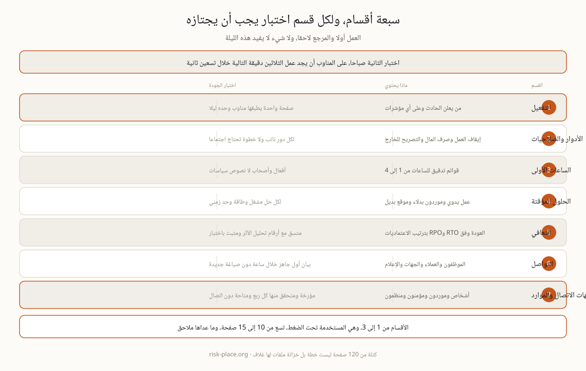

تخيلوا الساعة الثانية بعد منتصف الليل وحادثا جاريا ومناوبا يفتح خطة الاستمرارية لأول مرة تحت ضغط حقيقي. إن لم يجد جواب سؤال واحد، ماذا أفعل في الثلاثين دقيقة القادمة، خلال تسعين ثانية، فالخطة فشلت مهما بلغ عدد صفحاتها ومهما كانت مراجعها دقيقة. وهذا السيناريو وحده يملي المعمار كله، العمل أولا والمرجع لاحقا، ولا مكان لأي فقرة لا تفيد هذه الليلة. والفارق بين وثيقة امتثال ووثيقة عمل يظهر في السطر الأول من كل قسم، فوثيقة الامتثال تبدأ بالنطاق والتعريفات، ووثيقة العمل تبدأ بفعل أمر وباسم من ينفذه.
| القسم | ماذا يحتوي | اختبار الجودة |
|---|---|---|
| 1 · التفعيل | من يعلن الحادث، وعلى أي مؤشرات، وكيف تستدعى الخطة | صفحة واحدة يطبقها مناوب وحده ليلا دون سؤال أحد |
| 2 · الأدوار والصلاحيات | أدوار مسماة بصلاحيات مكتوبة، إيقاف العمليات وصرف المال والتصريح للخارج | لكل دور نائب، ولا خطوة واحدة تحتاج انعقاد اجتماع |
| 3 · الساعات الأولى | قوائم تدقيق حسب السيناريو للساعات من 1 إلى 4، سلامة الأرواح ثم الاحتواء ثم الإبلاغ | أفعال وأصحاب، لا نصوص سياسات ولا مبررات |
| 4 · الحلول المؤقتة | كيف تعمل الأنشطة ذات الأولوية بشكل متدهور، عمل يدوي وموردون بدلاء وموقع بديل | لكل حل مشغل معلن وطاقة قصوى وحد زمني |
| 5 · التعافي | إعادة الأنشطة إلى وضعها الطبيعي وفق RTO وRPO وبترتيب الاعتماديات | متسق مع أرقام تحليل الأثر ومثبت في اختبار |
| 6 · التواصل | من يبلغ الموظفين والعملاء والجهات والإعلام، مع بيانات أولية مصاغة سلفا | أول بيان جاهز خلال ساعة دون صياغة قانونية من الصفر |
| 7 · جهات الاتصال والموارد | أشخاص وموردون ومؤمنون ومنظمون، وموضع رموز الوصول وتفاصيل الموقع البديل | مؤرخة ومتحقق منها كل ربع ومتاحة دون اتصال بالشبكة |
اقرؤوا العمود الثالث قبل الثاني. اختبار الجودة هو ما يحول القسم من عنوان إلى ضابط، وهو مصاغ عمدا بحيث يجاب عنه بنعم أو لا دون نقاش. والقسمان اللذان يفشلان أكثر من غيرهما هما الرابع والخامس. فالحلول المؤقتة تكتب عادة بصيغة النية دون طاقة قصوى ولا حد زمني، فتبدو حلا وهي في الحقيقة أمنية. والتعافي يكتب دون ربط بأرقام هدف زمن التعافي وهدف نقطة الاستعادة الخارجة من تحليل أثر الأعمال، فتظهر في الخطة أرقام لم يوافق عليها أحد ولم تختبر قط. ومعنى الرقمين وكيفية وضعهما بصدق في صفحة شرح RTO وRPO.

الأقسام من 1 إلى 3، وهي الجزء المستخدم فعليا تحت الضغط، ينبغي أن تسع من 10 إلى 15 صفحة، وكل ما عداها ملاحق. الكتلة المؤلفة من 120 صفحة ليست خطة بل خزانة ملفات لها غلاف، وهي تفشل لسبب مادي بسيط، لأن أحدا لن يتصفحها بحثا عن رقم هاتف بينما الهاتف يرن. والقاعدة العملية أن كل صفحة إضافية في الجزء الأول يجب أن تدفع ثمنها بقرار تسرعه، وإلا فمكانها الملحق. ولا تكرروا المحتوى بين الوثائق، فالمحتوى المشترك يعيش مرة واحدة ويشار إليه من كل مكان، والتكرار هو ما يجعل التحديث مستحيلا بعد سنة.
الخطة تتحلل بهدوء، فالأشخاص يغادرون والموردون يتغيرون والأنظمة تهاجر إلى بيئات جديدة، ولا شيء من ذلك يصدر إنذارا. وثلاث عادات تبقيها واقعية، التحقق من جهات الاتصال كل ربع، والمراجعة بعد كل تغيير جوهري، وتمرين سنوي تعدل نتائجه الوثيقة فعلا لا تلحق بها كمرفق. وكل من NCEMA 7000 والمادة 7 من إطار المصرف المركزي يتوقعان هذه الدورة نفسها مع أدلة تثبتها، وليس مجرد وجود ملف بعنوان صحيح. وقياس نضج هذه الدورة، لا وجودها، هو ما يميز البرنامج القائم عن الملف المحفوظ، وهو موضوع صفحة مؤشرات نضج المرونة.
بناء الخطط والإجراءات القابلة للاستعمال تحت الضغط هو الوحدة M3 من برنامج ERGP، أول شهادة في حوكمة المرونة متاحة بالكامل باللغة العربية وبالإنجليزية أيضا. ست وحدات وستة مخرجات عملية وشهادة قابلة للتحقق.
تعرفوا على برنامج ERGP